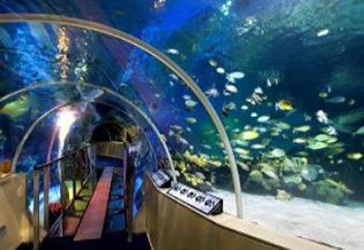
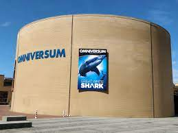

SEA LIFE
Sea Life Scheveningen geeft je een bijzonder kijkje in het wonderbaarlijke onderwaterleven van onze oceanen.
Kom oog in oog te staan met haaien en roggen. Leer meer over zeeschildpadden en gevaarlijke piranha's.
En ontmoet de vriendelijke otters en pinguïns in hun mooie verblijf. SEA LIFE beschikt over maar liefst 45 aquaria
met zeedieren en is elke dag geopend. De overdekte attractie biedt daarmee altijd een afwisselend uitje voor families
met kinderen van ongeveer 3 tot en met 11 jaar, ook als het regent of slecht weer is in Den Haag. Kids kunnen dagelijks
het voeren van de dieren bijwonen of een speurtocht doen, en in de schoolvakanties zijn er extra jeugdactiviteiten die
gratis bijgewoond kunnen worden. Gelegen aan de boulevard van Scheveningen, is SEA LIFE perfect te combineren met een
bezoek aan het strand. Zo maak je van je dagje weg een heuse zeedag!

Omniversum
One Planet - De toekomst is begonnen!
One Planet Dome, het filmtheater waar je onderdeel van de actie bent! Met een scherm dat 4.500 keer groter is dan
een gewone TV, met 15.000 watt geluid afkomstig uit 36 speakers zullen je zintuigen overdonderd worden door de grootste
filmervaring ooit. Dit unieke filmtheater in Den Haag is gebouwd om je mee te nemen naar andere werelden.
Ronduit spectaculair!